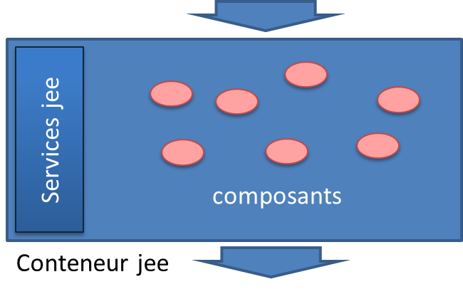

Les conteneurs jee
Les serveurs jee
Un serveur jee embarque des services qui permettent de faciliter l'écriture d'applications.
Une application est construite avec des composants managés par le serveur.

- Les composants : servlets, portlets, ejb, jsp...
- Les services : JPA, JMS, JDBC, JNDI, JMX...
La liste complète des spécifications jee 7 est disponible sur le site d'oracle.
Il est existe 2 types des serveurs :
- les conteneur de servlets : le minimum afin de faire des applications web
- les serveur d'application : tous les services jee sont disponibles
Historique
Voici les principales dates clées pour jee.
- J2EE 1.2 (1999) : servlets, jsp, EJBs (1.1), JMS, RMI
- J2EE 1.3 (2001) : EJBs (2.0 CMP), JCA
- J2EE 1.4 (2003) : EJBs (2.1 MDB), Web services, JAX-RPC, Deployment Specification
- JEE 5 (2006) : EJB (3.0 annotations), JPA, Annotations, JSF, JAX-WS
- JEE 6 (2009) : Profil web, Servlet 3.0, EJB (3.1 singletons, lite, asynchronous), CDI, JAX-RS
- JEE 7 (2013) : JMS 2.0, JAX-RS 2.0, Servlet 3.1, API JSON, WebSockets
La liste complète est beaucoup plus riche.
http://en.wikipedia.org/wiki/Java_EE_version_history
Plus généralement, l'évolution de jee peut être vu comme :
- Une base solide mais controversée (EJBs) en 2000
- Une évolution d'un monolithe vers une galaxie de services (ex CMP -> JPA, EJB -> CDI)
- Le passage du tout xml vers les annotations depuis 2006
Aujourd'hui, jee a beacoup gagné en simplicité mais reste complexe à appréhender.
Packaging
Un package est un fichier zip contenant toutes les ressources d'un module : lib, appli web...
Il existe 3 formes majoritaires de packaging en java.
| nom | extension |
| Les librairies | .jar |
| Modules réutilisables. | |
| Les applications web | .war |
| Composants web (servlets, jsp) avec un descripteur de déploiement WEB-INF/web.xml. | |
| Les applications entreprise | .ear |
| Tous les composants jee possibles. | |
Les descripteurs de déploiement décrivent les composants présents.
- web.xml pour les war
- persitence.xml pour JPA
- ejb-jar.xml pour les EJBs
Arborescence d'un war
Un war (web application archive) est un zip contenant une application web.

Le répertoire WEB-INF est un répertoire protégé.
Ses fichiers ne sont pas accessibles directement.
- classes : les classes java du projet
- lib : les librairies externes
- jsp : les fichiers jsp
- tags : des morceaux de jsp réutilisables
- tld : des descripteur de tags
- web.xml : le descripteur de déploiement
- à la racine : les fichiers web accessibles
Les composants jee
Voici quelques types de composants.
| nom | description |
| Servlets | Le composant pour la gestion des requêtes client - serveur |
| Enterprise jave beans (EJBs) | Services, modèle de données et messages asynchrones |
| Java server pages (JSPs) | Le moteur de templating afin de créer les pages HTML |
| Portlets | Fragment de page dans un conteneur de portlets |
Les composants java qui adhèrent à une interface définissant un cycle de vie. Par ex :
public void init() {...}
public void doGet() {...}
public void destroy() {...}
Ces interfaces permettent au serveur de piloter les composants.
Les spécifications récentes sont moins rigide (annotations / injection de dépendances).
Les servlets
L'api de la classe HttpServlet possède les méthodes suivantes
init(ServletConfig config) destroy() doGet(HttpServletRequest req, HttpServletResponse resp) doPost(HttpServletRequest req, HttpServletResponse resp) doPut(HttpServletRequest req, HttpServletResponse resp) doDelete(HttpServletRequest req, HttpServletResponse resp) doHead(HttpServletRequest req, HttpServletResponse resp) doOptions(HttpServletRequest req, HttpServletResponse resp) doTrace(HttpServletRequest req, HttpServletResponse resp)
La servlet propose un mapping complet des méthodes HTTP.
En général, seules doGet et doPost sont utiles.
Le protocole HTTP en objets
L'API javax.servlet.http permet la manipulation des requêts HTTP.
| classe | utilisation |
| HttpServletRequest | La requête HTTP : path, paramètres, body... |
| HttpServletResponse | La réponse HTTP : écriture de la réponse, des headers, des cookies... |
| Cookie | Une paire clé / valeur (+ maxAge, path, domain, secure). |
Et les composants jee qui les manipulent.
| classe | utilisation |
| HttpServletContext | Le context d'éxecution des servlets contenant la configuration. |
| HttpServlet | Gestion des requêtes / réponses. |
| HttpSession | Stockage de données en session. Le suivi de la session se fait via un cookie jsessionid. |
| Filter | La possibilité d'intercepter les requêtes avant qu'elles n'arrivent aux servlets. |
Les fichiers jsp
Les fichiers jsp sont le moteur de templating des conteneurs de servlets.
<%@ page language="java" contentType="text/html; charset=UTF-8" pageEncoding="UTF-8"%>
<!DOCTYPE html PUBLIC "-//W3C//DTD HTML 4.01 Transitional//EN"
"http://www.w3.org/TR/html4/loose.dtd">
<html>
<head></head>
<body>
Hello ${name} !<br>
Hello <%=name%> !<br>
</body>
</html>
Ils disposent de mécaniques puissantes afin de créer le rendu html pour une page web.
Ils peuvent aussi générer du texte ou du xml mais c'est généralement du html.
Les jsp sont compilées en servlet au moment de leur interprétation, avant d'être exécutées.
Les outils des jsp
Les directives
<%@ page language="java" contentType="text/html; charset=UTF-8" pageEncoding="UTF-8"%> <%@ include file="autre_fichier.jsp" %>
Les actions
<jsp:include page="autre_fichier.jsp" > <jsp:param name="monParam" value="valeur" /> </jsp:include>
Expression language
${cart.items[2].name}
Custom tags et Fonctions
<fmt:formatDate value="${task.date}" pattern="dd MMM yyyy" />
${fn:escapeXml(task.text)}
Avec bien sûr les libs c, fmt et fn de la jstl